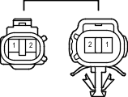

Наименование
Главный кабель моторного отсека и кабель датчика системы противоскольжения (фартук правого переднего крыла)
Код
Ap1
Каталожный номер
90980-11003/90980-11002
Цвет
Серый
Технические характеристики

Расположение
Электропроводка в моторном отсеке (для моделей с левосторонним рулевым управлением и двигателем 1GR-FE)
Электропроводка в моторном отсеке (для моделей с левосторонним рулевым управлением и двигателем 1KD-FTV)
Электропроводка в моторном отсеке (для моделей с левосторонним рулевым управлением и двигателем 2TR-FE)
Электропроводка в моторном отсеке (для моделей с левосторонним рулевым управлением и двигателем 5L-E)
Электропроводка в моторном отсеке (для моделей с правосторонним рулевым управлением и двигателем 1GR-FE)
Электропроводка в моторном отсеке (для моделей с правосторонним рулевым управлением и двигателем 1KD-FTV)
Электропроводка в моторном отсеке (для моделей с правосторонним рулевым управлением и двигателем 2TR-FE)
Электропроводка в моторном отсеке (для моделей с правосторонним рулевым управлением и двигателем 5L-E)
Система
A-TRC (для моделей с 1GR-FE, 1KD-FTV)
АБС (для моделей с 1GR-FE, 1KD-FTV)
АБС (для моделей с 2TR-FE, 5L-E)
Система Crawl (для моделей с 1GR-FE, 1KD-FTV)
Система помощи при спуске по склону (для моделей с 1GR-FE, 1KD-FTV)
Система помощи при подъеме по склону (для моделей с 1GR-FE, 1KD-FTV)
Переключатель выбора "Multi-Terrain" (для моделей с 1GR-FE, 1KD-FTV)
TRC (для моделей с 2TR-FE)
VSC (для моделей с 1GR-FE, 1KD-FTV)
VSC (для моделей с 2TR-FE)